Eleven proposed face themes — six analog, three digital-only, two specialty encodings. All faces show 10:08:42 for direct comparison. Each SVG is a live, editable file in this directory.
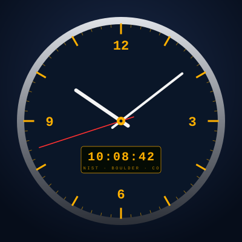
Dark navy field, brushed-silver bezel, amber LCD digital readout printed with NIST · BOULDER · CO. Leans hard into the project's atomic-clock identity. Best for users who want the clock to feel like an instrument.
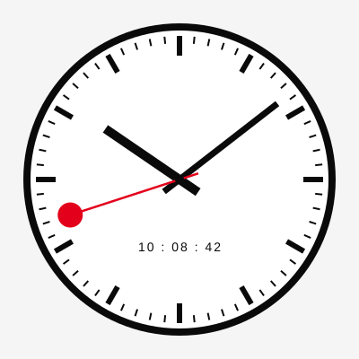
Mondaine / SBB-inspired Swiss minimalism. White face, black baton hands, single red second hand with the iconic stop-signal disc at the tip. The neutral default candidate for daytime work.
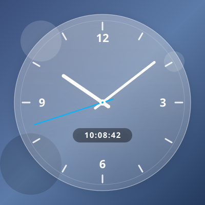
Translucent acrylic disc over a desktop wallpaper. White hands, cyan second hand, drop shadow. Designed to make the desktop overlay mode feel native to Windows 11's Fluent design language.
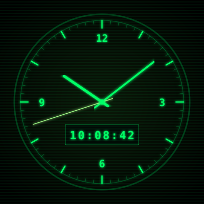
Black background, glowing phosphor green hands and ticks, 7-segment-style digital readout, faint scanlines layered on top. Pure CRT nostalgia. A "fun" face you keep on a secondary monitor.
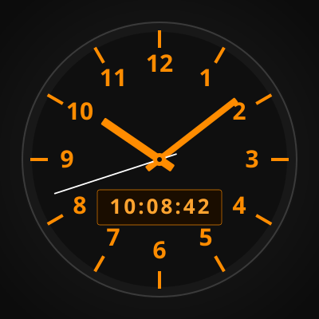
Charcoal field, bold orange numerals at every hour position, departure-board-style digital. Optimized for at-a-glance reading from across a room or when the clock window is small in the corner of a screen.
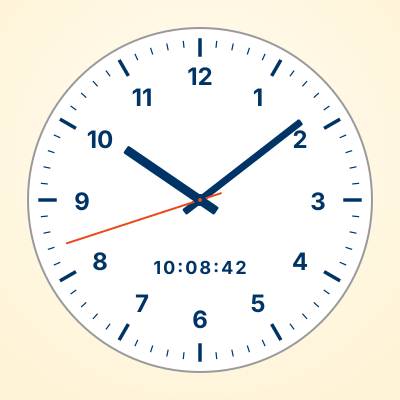
Pale cream background, bold navy numerals at every hour, orange-red second hand. High contrast and accessibility-friendly. Designed to remain legible in bright office environments and for users with low vision.
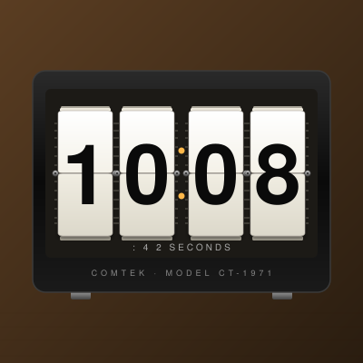
Retro 1970s Solari/Twemco-style bedroom alarm clock — white tiles with bold black digits on a chrome-spindle stack. Each tile shows the visible page-edges of the cards above and below it, and a thin sliver of the next tile peeks through above and below the front face. Hinge line bisects the card; chrome spindle pegs pierce the axis. Amber pip colon. COMTEK · MODEL CT-1971 on the case.
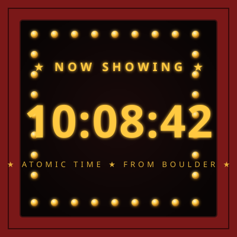
Theater marquee with chase bulbs framing the time. Glowing yellow incandescent palette inside a deep red frame. ★ NOW SHOWING ★ overhead, ★ ATOMIC TIME ★ FROM BOULDER ★ below. The bulbs would chase left-to-right at runtime.
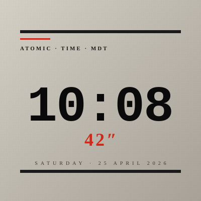
Brutalist / architectural — concrete-grey gritty backdrop, oversized black slab-serif HH:MM, a single red rule for the seconds accent. Olivetti-meets-Swiss-train-station signage. Strong typographic personality without competing for attention.
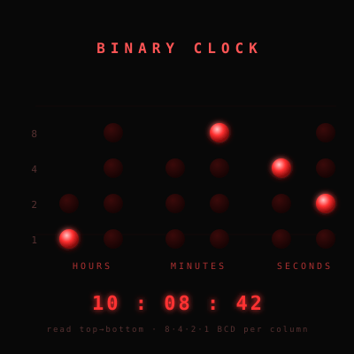
Six columns of BCD-encoded LED dots. Top-to-bottom each column reads bit values 8·4·2·1. Hours-tens has 2 dots, tens-of-min/sec have 3, ones columns have 4 — the empty rows aren't lazy, those bits don't exist for those digits. Decoded readout below catches you up.
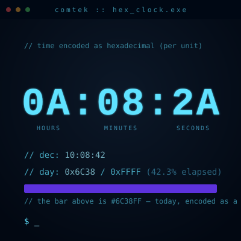
Two hex encodings on the same screen. Each unit (HH, MM, SS) shown as a hex pair — 0A:08:2A — with decimal underneath. Then the elapsed fraction of today as a 16-bit hex value (0x6C38 / 0xFFFF) which doubles as a literal #RRGGBB color swatch. The bar IS today, encoded.